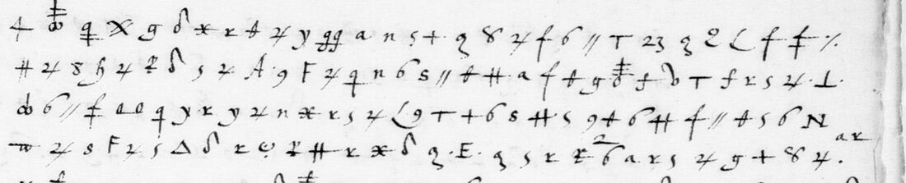
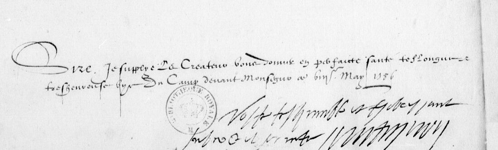

At a glanceKnown key applied · partial, 4,560 of 5,293 signs in runs of French (86.1%)
- The letters
- Marshal Matignon to Henri III from the camp before Monségur, May 1586. Two letters of autumn 1586 from the Duke of Mayenne’s side, sender and recipient not named in the cipher.
- Where
- Bibliothèque nationale de France, fr. 15572 ff. 218–219 and fr. 15573 ff. 120 and 385, on Gallica. ff. 218–219 were catalogue item 12 here; the other two were not in the ledger.
- The cipher
- Mayenne–Forget’s Cipher-2: invented signs and figures for letters, signs for syllables and common words, and a slash between some words. It is not the Cipher-1 of the other Mayenne–Forget despatches.
- How it was deciphered
- Satoshi Tomokiyo published a table of the key. Brett Burford checked it on six letters in the same cipher that were deciphered at the time and added code values from them. Claude named the signs from the images, and the key was applied mechanically.
- What it says
- Twelve hundred shots against the wall of Monségur, three breaches, Sacramore de Birague wounded, an army short of everything and Mayenne in a fever. In the autumn, money that never comes and an army breaking up at the start of winter.
- Still open
- About 22 code signs, short stretches in all three letters, and a check of the transcriptions by a person.
- Credit
- The readings are Harumi-Matsuba’s (ff. 218–219 and f. 120, issues 49 and 51) and Brett Burford’s (f. 385, issue 46), October 2026, with Tomokiyo’s key. They were reviewed, spot-checked on the images and re-measured here.
01 The three letters
Satoshi Tomokiyo (cryptiana, Henry III’s Cipher with Ambassadors) distinguishes several ciphers in the papers of the Guyenne war of 1585–86 in BnF fr. 15572–15573. He lists these three letters as having no known decipherment and as written in the cipher he calls Mayenne–Forget’s Cipher-2, and he publishes a reconstruction of its key. The project keeps one entry per key. These three letters are in Cipher-2, so they form this entry. The Mayenne–Forget despatches in Cipher-1 and Matignon’s slips in Cipher-3 have their own entries, and their code numbers mean different things.
| Letter | Gallica | Lines | Signs | In runs of French | Deciphered by |
|---|---|---|---|---|---|
| fr. 15572 ff. 218r–219r, Matignon to the King, Monségur, May 1586 | btv1b9061879d, views 225–226 | 79 | 2,138 | 1,856 (86.8%) | Harumi-Matsuba |
| fr. 15573 f. 120r–v, autumn 1586 | btv1b90618780, views 246–247 | 39 | 1,103 | 1,002 (90.8%) | Harumi-Matsuba |
| fr. 15573 f. 385r–v, autumn 1586 | btv1b90618780, views 752–753 | 68 | 2,052 | 1,702 (82.9%) | Brett Burford |

02 The key
Tomokiyo’s table is a homophonic substitution: several invented signs and figures stand for each common letter. Other signs stand for syllables and short words such as de, la, que, est, pour and monsieur, and some figures for words, for example 23 apres, 24 peu and 31 pas. A slash marks some word ends.
Burford checked the table on Mayenne’s letter to the King from the camp of Libourne, September 1586 (fr. 15573 ff. 103v–104r), whose decipherment of the time is written in the margins. He then read five more letters in the same volume that carry their decipherment (ff. 7v–8r, 32r–33r, 97r, 149r–150r). From them he took values for code signs: armée, tout, the ending -ée and 17 tant, and two more that he marks doubtful. Harumi-Matsuba used Tomokiyo’s table for ff. 218–219 and Burford’s key for f. 120.
Two readings of the key still conflict between the contributors. For Harumi-Matsuba a barred h is armée, while Burford separates two similar signs, one tout and the other armée. A sign the table gives as q also stands where the decipherments of the time have pour.
03 Monségur, May 1586

Matignon wrote to the King from the siege of Monségur, which Mayenne’s army took in May 1586. The despatch opens in clear (the battery began at first light and lasted until sunset), and the cipher continues the story. Harumi-Matsuba’s reading begins:
Et y ayant esté tiré pres de douze cens coups, mais ne feirent pas toutesfois tant d’effect que l’on s’estoit promis, parce que la muraille se trouva aussi beaucoup meilleure que l’on ne cuidoit.
Three breaches were made, meant for a lodgement on one of them. The sieur Sacramore de Birague, on guard on that side, tried for it that evening, was badly wounded and had to fall back. Matignon held back the young nobles and now means to advance step by step. The army needs relief, as the sieur de Sailly has already reported. Something the cipher hides behind code 36 will have to come from Brittany to last until the harvest. The forces shrink every day, and pay matters most of all. The letter closes on Mayenne’s fever, which the physicians judge free of danger.
This reading rests on a single pass by Claude over the signs. On six lines of another Cipher-2 letter with a known answer, the same method agreed with the decipherment on 74.8% of letters. A second transcription by OpenAI’s Codex, made without the first, agrees with it on 72–86% of values per page. The gist is secure, but individual words are not.
04 Autumn 1586
f. 120 has no clear text and no readable endorsement. In Harumi-Matsuba’s reading, “this prince” is more vexed than ever. The treasurer Bilart has had thirty thousand écus in gold ready for ten days, and the Cardinal of Guise writes that five thousand are on the way. But “not five thousand but a hundred and five thousand” would not set the army right. The Marshal of Biron cannot be kept, deputies of the army have come, and papers of the secretary La Marsilière have fallen into “our” hands. The transcription was checked against an independent one by Codex (92% and 90% agreement on values), but not by a person.
f. 385, in Burford’s reading, describes the royal army in Guyenne breaking up as winter begins. Fewer than a thousand foot are left, men ask for leave, and there is no powder. The writer weighs what to do over the winter with the regiments and the foreign troops. He considers sending the landsknechts who were in Champagne and keeping a company of light horse, and he names Monsieur d’Halincourt, Monsieur de Matignon, La Roche and probably the young Aubeterre. Five passes of Claude were voted sign by sign, and on known text the voted reader got 93% of signs right.
05 How it was checked
- One measure for all three. Both contributors’ files were put in one format (
to_read.py) and measured with the rule used for the Cipher-1 and Cipher-3 entries. A sign counts only inside a run of at least three words of a period lexicon (fr-1600-letters) totalling ten letters or more. The result is 1,856 of 2,138 signs for ff. 218–219, 1,002 of 1,103 for f. 120 and 1,702 of 2,052 for f. 385. - Shuffled keys. With the letter values shuffled, 20 keys give medians of 10–16% per letter and at most 31%.
- Sense is not correctness. The measure shows the key turns the transcriptions into French. It does not show that each sign was named right, and the calibrations put that at 75–93% per sign.
- On the images. Here the line counts and layout of ff. 218v–219r, f. 120r and f. 385r were compared with the contributors’ files, and the clear closing and signature of f. 219r were transcribed. All three letters show the same signs (barred crosses, three dots, double slashes, figures). f. 120r also has a few small superscript marks over some signs, which neither contributor mentions and which may be partial glosses.
06 What stays open
- About 22 code signs without a value, most used once: on f. 385 the figures 14, 15 and 30 and a sign that probably stands for vostre majesté; on ff. 218–219 code 36 (perhaps victuals) and eight others; on f. 120 thirteen kinds of sign.
- Short stretches that do not read in all three letters. The longest are on ff. 218r–219r, which had one reading pass only.
- A check of the transcriptions by a person, and the conflicting key values above.
- Whether George Lasry, whom Tomokiyo credits with identifying f. 385 and with its opening fragment, read more of it.
07 Sources
- Bibliothèque nationale de France, fr. 15572 ff. 218–219 (Gallica
btv1b9061879d, views 225–226) and fr. 15573 ff. 120 and 385 (btv1b90618780, views 246–247, 752–753). - Satoshi Tomokiyo, cryptiana, Henry III’s Cipher with Ambassadors: the list of the letters, the Cipher-2 table, and the f. 385 fragment, credited to George Lasry.
- Brett Burford, issue 46 and BravoBravoIX/mayenne-forget-1586-cipher-reading (v0.2, 19 October 2026; Zenodo doi:10.5281/zenodo.23470961; data CC BY 4.0).
- Harumi-Matsuba, issue 49 with Harumi-Matsuba/matignon1586-public, and issue 51 with Harumi-Matsuba/mayenne1586f120-public (October 2026; data CC BY 4.0).
- Other entries for these papers: Matignon’s Cipher-3, a different cipher with its own page, and the Mayenne–Forget Cipher-1 despatches (
targets/matignon1586/, in progress).
Notes, profile and the contributors’ data in targets/mayenne1586c2/.